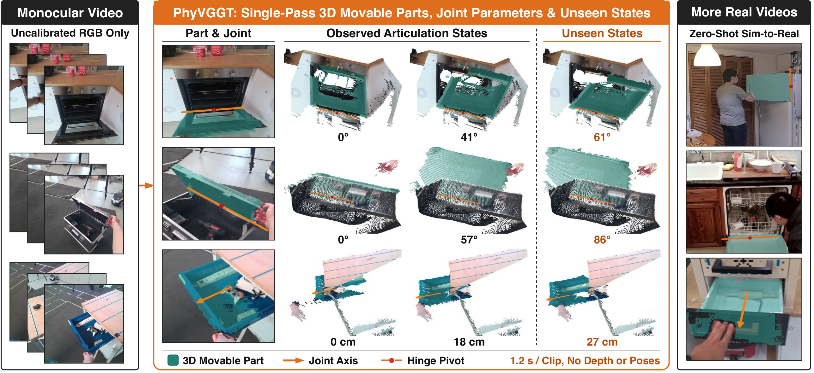
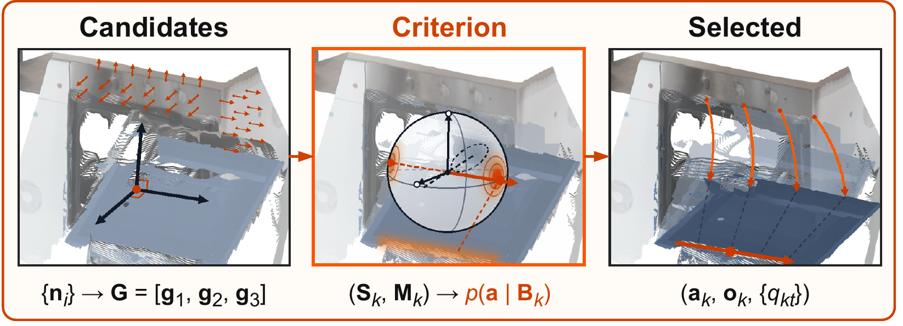
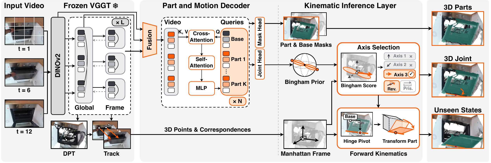
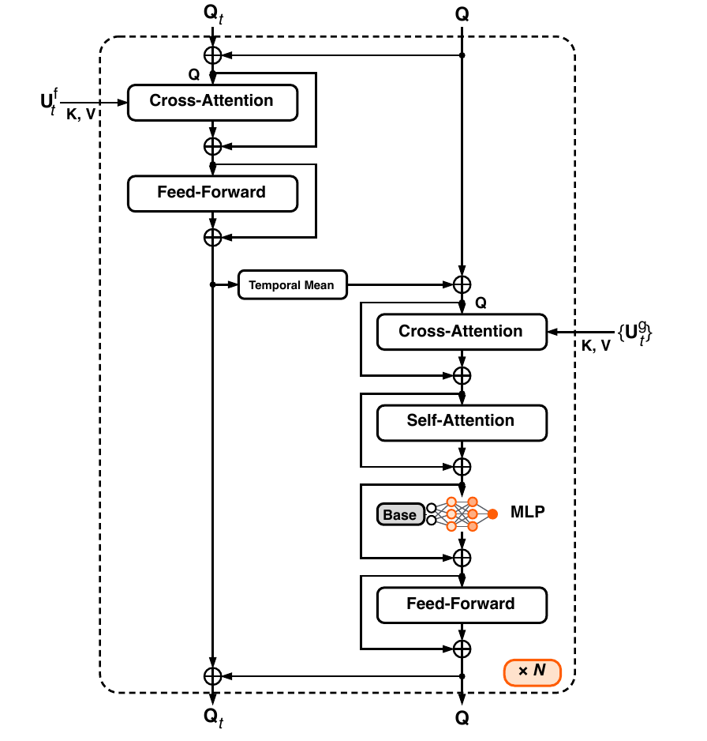
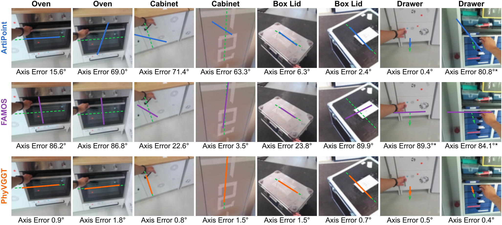
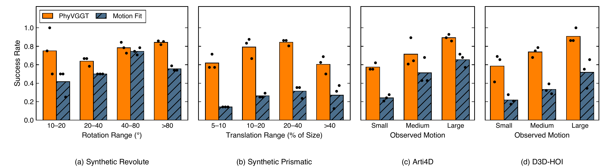

Reconstructing an articulated object with its 3D movable parts, joint parameters and unseen articulation states from an uncalibrated monocular video is essential for robot manipulation and interactive digital twins. Existing per-scene optimisation methods require minutes to hours and external depth or camera poses, whereas feed-forward 3D foundation models reconstruct dense point maps in one pass without segmenting movable parts or inferring joints. Even on these monocular point maps, regressing or fitting continuous joints directly fails on casual videos, since cross-frame attention blurs moving part boundaries in deep layers, underestimates motion along the viewing ray and leaves continuous axes ill-conditioned under small opening angles. To address these challenges, we propose PhyVGGT, a single-pass framework on a frozen 3D foundation model that anchors moving-part matching and closed-form joint estimation to the undistorted geometry of the stationary base. First, our Part and Motion Decoder fuses intermediate per-frame tokens with global tokens and references part queries to a static-base query to segment 3D parts, align point maps on the static base and predict learned Bingham priors. Second, our Kinematic Inference Layer fits an orthogonal Manhattan frame to static surface normals, selects the joint axis in closed form under a Bingham posterior combining pairwise motion scatter with the learned priors, and solves a linear system for the hinge pivot to drive unseen states. Trained solely on synthetic data, PhyVGGT achieves state-of-the-art monocular performance across five benchmarks, outperforming FAMOS and monocular ArtiPoint, surpassing posed RGB-D ArtiPoint in median error, and running in 6.8 s per 48-frame video against hours of per-scene optimisation in Articulat3D.

Swipe horizontally to inspect details
Figure 1. Single-pass 3D articulated object reconstruction from uncalibrated monocular RGB videos. Given casual RGB frames (left), PhyVGGT segments 3D movable parts (teal), estimates joint axes (orange) and hinge pivots (red) across observed articulation states, and drives each part to unseen states in 1.2 s per clip (centre), generalising zero-shot from synthetic training to diverse real-world scenes (right).

Figure 2. Static-base normals form an orthogonal Manhattan frame (Candidates). Combining pairwise motion scatter with the learned Bingham prior defines an antipodal Bingham posterior (Criterion) that selects the joint axis, from which the hinge pivot and joint states are solved (Selected).
Unlike moving parts, the stationary base is unaffected by cross-frame depth bias and stays geometrically accurate across frames. In cabinets, appliances and furniture, flat faces meet at right angles, so joint axes align with the three orthogonal directions of the base, and hinge pivots lie on the boundary between part and base.

Swipe horizontally to inspect the full architecture
Figure 3. Architecture overview of PhyVGGT. Given an uncalibrated monocular video, a frozen VGGT backbone extracts patch, per-frame and global tokens alongside 3D point maps (DPT) and tracking features (Track). The trainable Part and Motion Decoder fuses these streams and updates learnable base and part queries across N attention blocks to output part masks, correspondences and Bingham priors. The Kinematic Inference Layer fits a Manhattan frame to static normals, scores its three axes via a three-way softmax and solves for joint type, hinge pivot and unseen states via forward kinematics.

Figure 4. One block of the Part and Motion Decoder.
Part and Motion Decoder. Per-frame self-attention in VGGT keeps sharp part edges, while deep global attention captures motion but smooths moving boundaries. The decoder fuses per-frame and global tokens from multiple VGGT layers, lets per-frame queries localise boundaries within each frame and clip queries attend across frames, and updates each part query from its difference to the static-base query. Static-base correspondences align all point maps on the base before rigid part motion is recovered.
Kinematic Inference Layer. Fourth-order alignment of static surface normals yields an orthogonal Manhattan frame even when two object dimensions are similar. A Bingham posterior combining motion scatter with the learned prior reduces to a closed-form softmax over the three frame axes, and a linear solve gives the hinge pivot used to drive unseen states.

Swipe horizontally to inspect details

Swipe horizontally to inspect details
Figure 5. Joint accuracy at 10° stratified by observed motion amplitude across four development benchmarks. Under small opening angles, learned Bingham priors disambiguate the three Manhattan axes, reaching 75.0% on 10°–20° synthetic rotations and 58.6% on small-motion D3D-HOI-dev clips against 41.7% and 21.8% for continuous Motion estimate.
@article{shao2026phyvggt,
title = {{PhyVGGT}: Feed-Forward Articulated Object Reconstruction from Monocular Videos},
author = {Shao, Qi and Cao, Zhihao and Zhai, Shuhao and Nguyen, Anh and Liang, Hong and Huang, Baoru and Li, Liang},
journal = {arXiv preprint},
year = {2026}
}